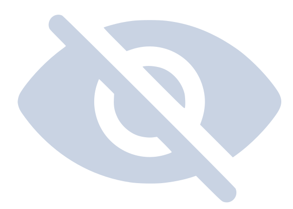

This page is the honest version. Not "it downloads your course" - but exactly how every file is found, where it
lands, which ones get rewritten, which ones get deleted, and precisely what a sync will and will not touch.
If you have ever wondered why the app did something, the answer is here.
The core idea
One rule explains most of the app's behaviour. Everything else is a consequence of it.
The whole model in one line
One file on Canvas becomes exactly one file in your folder - and your course folder remembers
which is which.
When a file is saved, the app records the link between the thing on Canvas and the thing on your disk. That
record lives inside your course folder itself, in a small hidden file called .canvas_sync.db.
It is what makes a sync possible months later: without it, the app could only compare filenames, and a
filename is a terrible way to identify a document.
Because the link is one-to-one, a file can never be quietly downloaded twice under two names. And because
the record lives in the folder rather than in the app, you can move the whole folder to another
drive, or another computer, and sync still works. Delete the folder and the app forgets it completely -
there is no hidden copy of your data anywhere else.
It lives in your folder
The record travels with your files. Move the folder, rename it, put it on a USB stick - sync still knows what's what.
It's yours to delete
Delete the folder and every trace goes with it. Nothing about your courses is stored anywhere else.
It settles arguments
When Canvas and your disk disagree, this record decides whether a file is new, changed, or one you deleted on purpose.
Download
Finding your files
Canvas hides files in more places than you'd expect. The app looks in all of them, in a specific order.
The obvious place is the course's Files tab. The catch is that teachers can switch it off -
and a lot of them do. On a course with the Files tab disabled, opening it yourself gives you a permission
error, and a naive downloader would conclude the course is empty.
So the Files tab is only the first of several passes:
1
Canvas content first
Assignments, pages, announcements and the rest are fetched before anything else. This ordering is
deliberate - see the note below.
2
The Files tab
The plain listing, when the teacher has left it enabled.
3
Every module, item by item
The app walks the course modules and picks up files attached to them. On a course with the Files tab
switched off, this is where everything comes from.
4
Links inside page text
Teachers often link a PDF inside the body of an assignment or page rather than attaching it. Those
links are read out of the text and followed, so the file comes down with everything else.
Why content comes first
A file can legitimately be in two places at once - sitting in the Files tab and attached to an
announcement. If the sweep ran first, it would save a copy, then the announcement pass would come along,
not know about it, and save a second copy under a different path. That genuinely happened: one file was
fetched twice, twenty-one seconds apart, and landed as two copies.
Running content first means the later sweep already knows the file has been placed, so it steps aside.
One file on Canvas, one file on your disk, one trip over the network.
Where files land
Two layout choices, and one setting that decides whether generated content gets its own folders.
With Subfolders
Mirrors the course's module structure - Module 1, Module 2, and so on. Best
if you think in weeks or topics.
All in One Folder
Every file sits directly in the course folder. Best if you search rather than browse, or you're
feeding the folder to something else.
Even in All in One Folder a few things still get a folder of their own, because they'd be
unusable otherwise: the contents of an unpacked archive (which have their own internal structure), lecture
recordings if you asked for them separately, and Canvas content if you switch on the option below.
Keeping generated content separate
Things the app creates from Canvas - an assignment brief saved as a web page, a quiz, an
announcement - can either sit inline next to the real course files, or be routed into their own tidy
folders. Turn the separation on and you get:
Folder
What goes in it
Assignments/
The brief for each assignment, plus anything attached to it
Announcements/
Course announcements and their attachments
Quizzes/
Quiz questions and answers
Discussions/
Discussion threads
Syllabus/
The course syllabus
Submission Feedback/
Your grades, rubric scores and teacher comments
Pages/
Canvas pages
Links/
External links saved as shortcuts
That last folder name is deliberate
It says Submission Feedback, not "Submissions", because it does not contain your
submissions. The app never downloads files you uploaded - you already have those on the machine you
submitted them from. What it saves is the feedback: your grade, the rubric assessment, teacher
comments, and any file a teacher attached to a comment.
Try it yourself
These are the real switches from Custom Download. Flip them and watch the folder redraw. The example
course has slides, a spreadsheet, a legacy Word doc, a code project in a zip, a video and a web link.
What your folder would look like
Card 1Organisation
Card 1Include files
Card 2Canvas content
Card 3AI Optimization - conversions
SettingsSize limit
0files on disk
0 MBtotal size
0originals replaced
0skipped
Notice what "convert" really means
Most conversions replace the original rather than sitting beside it. Turn on
PowerPoint → PDF and you get the PDF - the .pptx is gone. That is intentional
(you asked for a PDF, not both), but it is worth knowing before you run it on a folder you care about.
Every conversion on the card works this way - what you end up with is the converted file.
Canvas content
Six kinds of things that aren't files on Canvas, but become files on your disk.
An assignment brief isn't a document you can download - it's a web page inside Canvas. The app rebuilds
these as self-contained HTML files you can open, search and keep after you lose access to the course.
Option
What you get
Attachments?
Assignments
The full brief and description, saved as HTML
Yes
Announcements
Each announcement as HTML, dated
Yes
Quizzes
Questions and answers as HTML
n/a
Discussions
The thread, including replies
n/a
Syllabus
The syllabus page as HTML
n/a
Submissions (Results)
Grades, rubric scores, teacher comments
Teacher's only
Attachments are real files
When an assignment has a PDF attached, that PDF is downloaded as an ordinary file - not embedded in the
HTML. If the same PDF also appears in the Files tab, you still get exactly one copy, for the reason
explained above.
Lecture recordings
Panopto recordings are handled separately from course files, and can be transcribed on your own machine.
If your course uses Panopto, the app can find the recordings and pull them down in up to five forms. You
choose any combination:
Output
What it is
Notes
Shortcut
A small link file that reopens the lecture on Panopto
Costs nothing to fetch; a pointer, not a copy
Video
The full lecture as MP4
By far the largest option
Audio
Audio only, as MP3
A fraction of the size; enough to re-listen
Transcript
Plain-text transcript
Needs a model
Subtitles
Subtitles with timestamps
Needs a model
The shortcut is the cheap one. It costs nothing to fetch, and it keeps the things a downloaded copy loses -
the slide navigation, the screen capture and Panopto's own search. It is a pointer rather than a copy, so it
stops working when your access to the course does: a companion to an offline file, not a substitute for one.
Transcription happens on your computer
Transcripts and subtitles are produced locally by a speech model you download once. Your lectures are
never uploaded to a transcription service. It will use your graphics card if it can, and fall back to the
processor if not - slower, same result.
Each recording is transcribed in a separate, isolated process. If one recording fails, it cannot take the
rest of the run - or the app - down with it.
Recordings can either sit alongside the course material they belong to, or be collected in their own folder.
You can also permanently ignore individual recordings - a guest lecture you'll never rewatch - and they stay
out of every future sync until you restore them.
File conversions
Eight optional conversions - the app calls this card AI Optimization. The important
column is the last one.
Conversions run after everything is downloaded, and only over the files this run actually fetched.
A second run doesn't re-convert your whole folder.
Conversion
Applies to
You get
Original
Unpack Archives
.zip.tar.tar.gz
A folder with the contents
Replaced
PowerPoint → PDF
.ppt.pptx.pptm.pot.potx
A PDF of the deck
Replaced
Legacy Word → PDF
.doc.rtf.odt
A PDF
Replaced
Excel → PDF & data
.xlsx.xls.xlsm
A PDF, plus a _Data.txt with every cell value (.xls gets the PDF only)
Replaced
Canvas Pages → Plain Text
.html
A Markdown version of the page
Replaced
Code & Data → .txt
50 code and data formats - .py.js.sql.json.csv.yaml and more
A readable .txt with a header
Replaced
Gather Web Links
.url.webloc
One Compiled_External_Links.txt for the course. Panopto shortcuts are left alone.
Replaced
Video → Audio
.mp4.mov.mkv.avi.m4v
An MP3 of the audio
Replaced
Three details worth knowing
"Legacy Word" really does mean legacy
It converts .doc, .rtf and .odt - the formats that are awkward to open
on a modern machine. A .docx is left completely alone, because it already opens everywhere. If
you turn this on and your .docx files don't become PDFs, that's why.
Code files are renamed, not suffixed
analysis.py becomes analysis_py.txt - the dot turns into an underscore rather than
the extension simply being appended. That keeps the original type visible in the name while guaranteeing the
result can't collide with a real .txt that was already sitting there.
Office conversions need Office
PowerPoint, Word and Excel conversions drive the real desktop applications behind the scenes. If the relevant
app isn't installed, those conversions are unavailable - the files download normally, they just aren't
converted.
A rule with a story
Why archives are unpacked but never converted
The single most counter-intuitive rule in the app, and the measurements that produced it.
Turn on Unpack Archives and a zip is extracted. Turn on Code & Data →
.txt as well, and you might reasonably expect the code inside that zip to be converted too. It
isn't. Nothing inside an archive is ever converted - it's unpacked and then left exactly as
it is.
This was tried the other way round first. Here is what happened on one real lecture zip:
21,824files came out
of a single archive - a JavaScript project with its dependency folder included.
11,818would be rewritten
by the code conversion alone, each one renamed and its original deleted.
9,730would break
by landing on paths past Windows' 260-character limit - because converting a name makes it longer.
The argument that settled it
An archive is a payload your teacher uploaded as a unit. Unpacking it is a convenience. Rewriting its
insides is not - and most of these conversions delete the original. A student's own
.js file inside their own project would simply stop being a .js file.
So the rule is deliberately blunt: the archive's edge is where conversion stops. Your project structure
comes out of the zip exactly as your teacher packed it.
Sync follows the identical rule, so a folder can never drift into a different state just because it was
synced rather than downloaded.
Filters & limits
Two ways to download less, and what happens to everything you leave out.
Slides & PDFs only
Narrows the download to slide decks and PDFs, and nothing else: .pdf, .ppt,
.pptx, .pptm, .pot and .potx. Datasets, images, videos
and code are skipped - and so are Word documents. If your reading list is a .docx,
this filter will not bring it down; use All files instead.
The choice is written into the folder, so every later sync keeps to it: a filtered folder stays a filtered
folder, and files outside it are never offered. The review and completion screens say so, with a count of
what the filter is holding back, so a folder never quietly pretends to be a complete copy. To change it,
download the course again into a fresh folder with All files selected.
Maximum file size
Set a cap and anything larger is skipped. Useful on a metered connection, or when a course has a handful of
enormous videos you don't want.
An oversized file is set aside, not forgotten
A file the cap skips is recorded in your folder as ignored, so later syncs stop listing it as new
every time - which is the point, since otherwise the same enormous video would be offered on every run
forever.
It stays visible in Ignored Files on the pair's card. To bring one in later, raise the cap,
restore the file there, and sync - the restore is what puts it back in play, so raising the cap on its
own won't fetch it.
What can't be downloaded
Honest limits, and how the app reports them.
Situation
What happens
Teacher locked the file
Canvas refuses to serve it - there is no download link even for you, in the browser. It's reported
as a Locked File and the rest of the course continues normally.
Your own submitted files
Deliberately not downloaded. You already have them on the machine you submitted from. Teacher
feedback and attachments to it are saved.
Content behind another login
Publisher platforms and external tools have their own accounts. Where a link exists it's saved as a
shortcut, so you can still find it.
Deleted or unpublished
If it isn't visible to you in Canvas, it isn't visible to the app either - it uses your account and
sees exactly what you see.
A locked file is a permanent state, not an error to retry
It stays listed as locked on every future run rather than quietly disappearing, so you always know the
file exists and why you haven't got it. If the teacher unlocks it later, the next sync picks it up.
Sync
The folder remembers how it was made
Sync doesn't ask you to reconfigure anything, because the settings are already in the folder.
When you first download a course, your choices - subfolders or flat, which conversions, which Canvas content
- are written into the folder alongside the file records. A sync reads them back and applies exactly the same
rules.
That's why a synced file lands where you'd expect and gets converted the same way, months later, without you
remembering what you picked. It's also why sync has no settings screen of its own: adding one would let your
folder drift into a half-and-half state where some files followed one set of rules and some followed another.
Changing your mind
To change how a folder is organised, download the course again into a fresh folder with the new settings.
A sync will never restructure a folder underneath you - that's the kind of surprise it exists to avoid.
The six categories
Every difference between Canvas and your folder lands in exactly one of these.
Before a sync touches anything, it compares three things: what's on Canvas now, what your folder's record
says it saved, and what's actually on disk right now. Any disagreement becomes one of six categories - and
two of them are unchecked by default, because they represent decisions you made.
Category
What it means
What happens
Default
New Files
On Canvas, not in your folder yet
Downloaded into the right place
Checked
Updates (Clean)
Canvas has a newer version and you haven't touched your copy
Replaced in place - same name, same folder
Checked
Edited locally
Canvas has a newer version and you've annotated or edited yours
New version saved as _NewVersion beside yours. Your file is untouched.
Unchecked
Deleted Locally
You deleted it; Canvas still has it
Nothing, unless you tick it. Quick Sync always skips these.
Unchecked
Deleted on Canvas
Teacher removed it; you still have it
Nothing at all. Your copy stays exactly where it is.
Info only

Ignored Files
You chose to permanently skip it
Never appears again until you restore it
Permanent skip
Why two are unchecked
Each of the unchecked categories represents something you did on purpose. You edited that file. You
deleted that one. The app's job is to bring you new material, not to undo your decisions - so those
actions need an explicit tick before anything happens.
Renames & moves
You reorganise your folder. Sync is supposed to cope - and mostly it does.
If sync only matched on filenames, renaming a lecture slide would make it vanish from the record and come
straight back down as a "new" file - leaving you with two copies and a mess. So before comparing anything
against Canvas, the app tries to recognise files you've moved or renamed:
Same name, new location. Dragged into a subfolder? Matched immediately.
Different name, identical contents. Matched on the file's contents and size, so a
rename is recognised even if the new name looks nothing like the old one.
Similar name, close enough. A cautious last resort, used only when exactly one
candidate fits.
When one of these matches, the record quietly updates to your new name and location, and the file stays
up to date. No duplicate, no download.
Where it deliberately refuses
If two files could equally be the match, the app gives up rather than guessing and
treats the file as new. Binding the wrong one would silently mark a missing file as present, which is far
worse than an extra download.
It also refuses near-misses that only differ by a character or two - Lecture1 and
Lecture2 are different documents, not a typo, and treating them as the same file would be a
genuine data error.
The promise
Your edits are never overwritten
The one rule the app treats as non-negotiable.
You highlight a lecture PDF. You fill in the blanks on a worksheet. You add your own notes to a page. Then
the teacher uploads a corrected version. Both of those are valuable, and the app refuses to choose between
them:
Before the sync
After the sync
Lecture 4.pdf(with your highlights)
Lecture 4.pdf- byte for byte unchanged Lecture 4_NewVersion.pdf - the teacher's update
This holds for converted files too, which is the harder case. If your annotated file is itself the output of
a conversion, the protection applies to the file you edited, not the file that was downloaded - so
re-running the conversion can't quietly regenerate over your work.
This is tested on every release
The project's automated audit runs real syncs against real courses with deliberately edited files, and
checks the edited file's contents are identical afterwards - not merely that the file still
exists. Anything else counts as data loss and blocks the release.
Quick Sync vs Analyze, Review & Sync
Same engine, same rules - one shows you the plan first.
Analyze, Review & Sync
Scans, then shows you every change grouped by category. You tick and untick, optionally sweep things
into Ignored, and confirm. Nothing is written until you say so.
Quick Sync
Skips the review screen and applies the safe defaults: new files and clean updates only.
Quick Sync is the cautious one
Because it can't ask, it never does anything that needs your judgement. It always skips
files you edited locally and files you deleted locally - it won't fork a _NewVersion and it
won't resurrect something you removed. If you want either of those, use the review flow and tick them.
What sync never does
Guarantees, not intentions.
Never deletes your files
Not when the teacher removes something from Canvas, not when a file is unrecognised, not ever. Removal
from your disk is always your action.
Never overwrites your edits
An edited file gets a _NewVersion sibling. Your bytes stay yours.
Never touches files it didn't create
Your own notes, your own folders, a PDF you dropped in yourself - all invisible to sync and left
completely alone.
Never uploads anything
Nothing leaves your machine. The app reads from Canvas and writes to your disk, in that direction only.
Never restructures a folder
The layout you chose at download time is the layout you keep.
Never syncs silently
Every run ends on a screen listing what changed, with a link straight to each file.
 Video
Video Audio
Audio Transcript
Transcript Subtitles
Subtitles